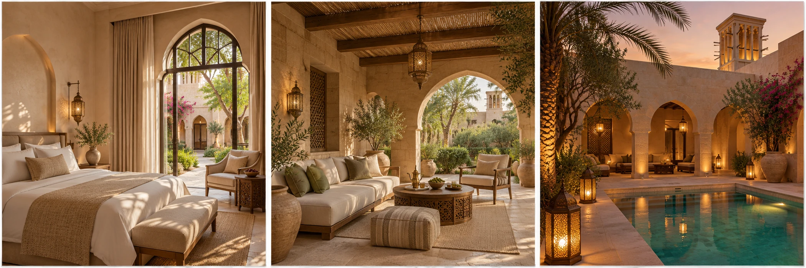
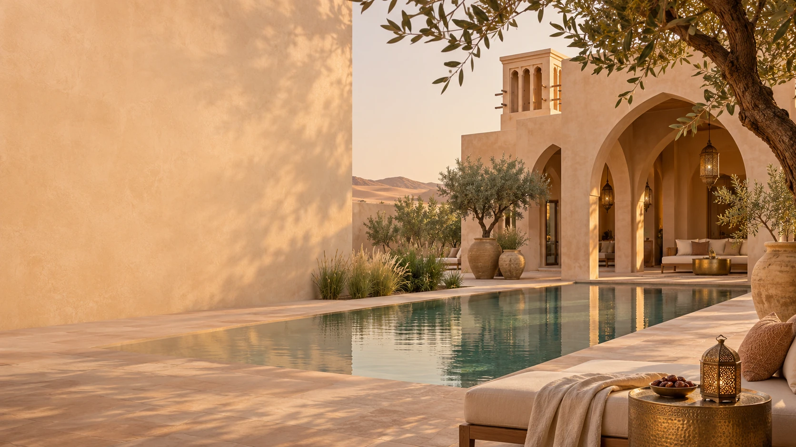

Courtyard Room
A warm, quiet space with a framed view.

AN INTIMATE DESERT RETREAT
Warm spaces, thoughtful details and time to slow down.
Discover Aster HouseA DIFFERENT PACE
Inspired by warm sandstone, shaded terraces and the gentle pace of desert life. Step into spaces that invite you to pause, unwind and rediscover the quiet.
THE RETREATS
A collection of imagined moments, each with a different sense of place.

A warm, quiet space with a framed view.
More room to unwind in the afternoon.
A slower rhythm after the sun goes down.
The simple pleasure of good light, calm surroundings and time to yourself. A fictional destination concept; no real bookings or accommodation.